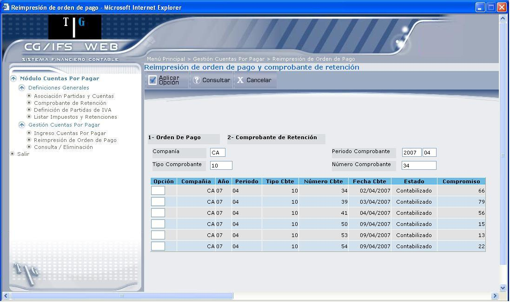
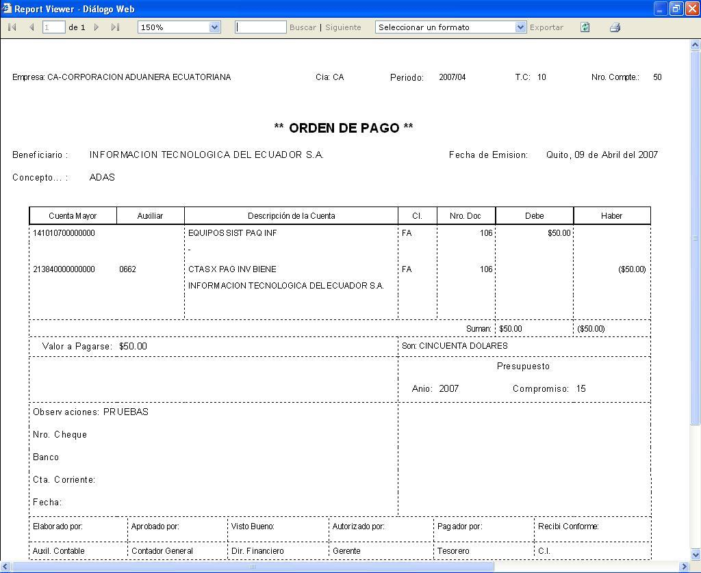
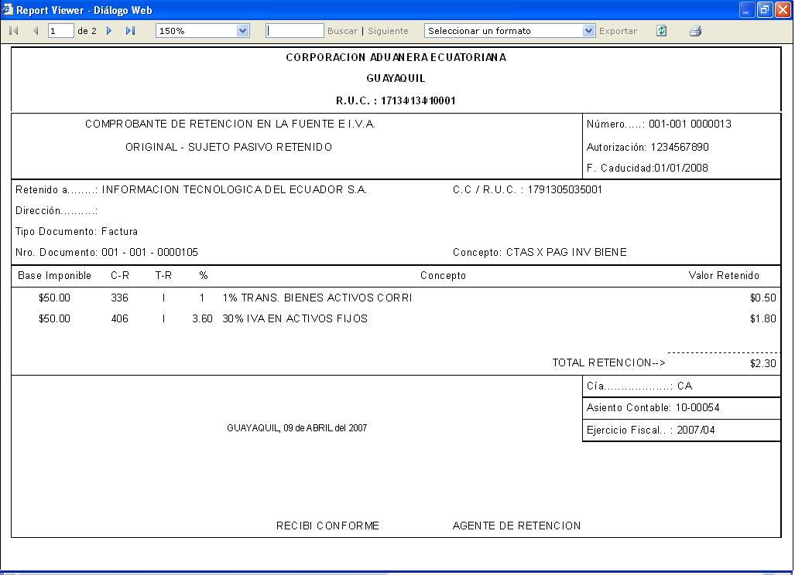

Reimpresión de Orden de Pago
Esta opción puede realizar la reimpresión de órdenes de pago y comprobantes de retención, mediante la pantalla que muestra la Figura 3.52:

Figura 3. Reimpresión de Orden de Pago.
Ingrese la siguiente información que se requiere para consultar o reimprimir las ordenes de pago o los comprobantes de retención.
Compañía:
Digite el código de la compañía de la cual desea consultar o realizar la reimpresión de comprobantes.
Mediante el ingreso de la compañía, podrá consultar los comprobantes para reimpresión; se desplegarán todos los comprobantes, sin tomar en cuenta el periodo, ni el tipo de comprobante. Si desea una consulta más específica ingrese los siguientes campos.
Periodo Comprobantes:
Digite el año y el periodo del cual desea realizar la consulta o la reimpresión de los comprobantes.
Tipo Comprobante:
Digite el código del tipo de comprobante.
Número de Comprobante:
Digite el número de comprobante, de éste comprobante se realizará la reimpresión o la consulta de comprobantes.
A continuación presione el botón CONSULTAR, caso contrario presione el botón CANCELAR, que borra toda la información ingresada, para volver a ingresar los datos requeridos.
Después de haber presionado el botón CONSULTAR se despliega la pantalla que muestra la Figura 3.53, en donde se despliega los comprobantes que coincidan con los parámetros especificados.

Figura 3. Reimpresión de Orden de Pago – Seleccionar Opción.
En los casilleros que se encuentran al lado izquierdo de cada línea, se puede ingresar la opción que desea realizar sobre los comprobantes y que son las siguientes:
- Digite “1”, para reimprimir las órdenes de pago.
- Digite “2”, para reimprimir los comprobantes de retención.
Si digita 1, se despliega el documento de la orden de pago, como muestra la Figura 3.54, que podrá ser reimpreso.

Figura 3. Ejemplo de Reimpresión de Orden de Pago.
Si digita 2, se despliega el documento del comprobante de retención, como muestra la Figura 3.55 que podrá ser reimpreso.

Figura 3. Ejemplo de Comprobante de Retención.
Created with the Personal Edition of HelpNDoc: Easily create Help documents